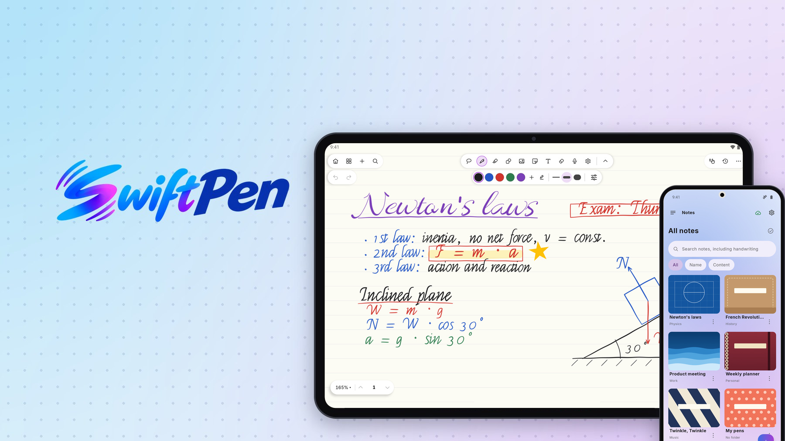

SwiftPen 1.3.1
19 de octubre de 2026
Esta versión estrena el recorte de imagen sobre la propia imagen y los stickers como herramienta, y te deja ordenar las herramientas de la barra.
Novedades
- Recorte de imagen directamente sobre la imagen, con barra flotante (rectángulo, óvalo o libre); «Recortar» y el candado, directos en la barra de selección. Al reabrir un recorte ves la imagen original entera.
- Stickers como herramienta propia, con los 8 recientes y el menú completo al tocarla otra vez.
- Ajustes > Escritura > «Orden de las herramientas»: reordénalas arrastrando o con flechas, y restaura el orden original.
- Engranaje de ajustes en cada herramienta (lápiz, resaltador, goma, formas y lazo) y botones +/- en los presets.
Mejoras
- La forma perfecta se activa con más facilidad y es más fiel al trazo; el resaltador conserva color, opacidad y grosor.
- Lápiz de formas: rectas y flechas se seleccionan por la línea, un toque selecciona y deslizar dibuja, la estrella sale uniforme y puedes mantener las proporciones.
- La muestra del grosor de la pluma usa el zoom real y cabe entera con el grosor máximo.
- «Seleccionar» pasa a llamarse «Lazo» en la barra.
- El carril lateral de Inicio respeta la barra de navegación.
- Las miniaturas de la biblioteca aparecen mucho más rápido, también las de notas con lápiz o muy pesadas.
- Los botones del editor responden visualmente al tocarlos.
- El menú de tres puntos se cierra al volver a tocar el botón y sale por encima de los paneles flotantes.
- Sincronización: «Sincronizar ahora» muestra su progreso y reintenta cuando Drive pide esperar; si Drive rechaza el acceso, la app lo explica y te deja reconectar, y «Desconectar» pide confirmación.
- Sincronización: la nota abierta recibe los cambios de otro dispositivo en unos segundos sin cortar tu trazo, los cambios se suben poco después de guardar y los fallos de sincronización se ven en una lista.
Correcciones
- Traer una nota de la nube ya no pisa lo que guardaste mientras se descargaba.
- El popup nativo de texto ya no tapa la barra de formato.
- Los nombres vacíos se ven como «Sin título» y la fecha de la tarjeta tiene letra grande.
- Stickers: la flecha curva ya no lleva pelota y un toque con Stickers pone un cuadrado con +.
- Más estabilidad al guardar y abrir notas con muchísimos trazos: duplicarlos ya no congela la hoja ni deja la nota sin abrir.
SwiftPen 1.3.0
18 de octubre de 2026
Esta versión estrena las cajas de texto, mejora mucho el lápiz y las imágenes, y deja la barra del editor donde tú quieras.
Novedades
- Cajas de texto en las notas: créalas, edítalas y expórtalas a PDF con texto real. Hay también un menú de stickers para insertar.
- Mientras escribes, una barra fija reúne el formato (negrita, cursiva, subrayado, tachado), el mismo selector de color del lápiz y un menú de fuentes propio. El formato va solo a lo que sombreas.
- Al seleccionar una caja, una barra mínima permite borrarla (y duplicarla, girarla o bloquearla desde «···»); el color, el tamaño y las fuentes están en la barra fija de arriba. Muévela y estírala incluso mientras la editas; al pegar texto se crea una caja, y la búsqueda y el .txt incluyen su texto.
- El borrador tapa partes de una imagen sin estropearla, el recorte de imagen se hace en un panel y un candado claro bloquea las imágenes.
- Lápiz de trazo lleno, estrella reconocida con vibración, grosor del trazo que se mantiene al escalar y, al mantener pulsado un acceso de grosor, se fija. Las formas tienen menú de tres puntos y el lazo, asa de giro y una barra que no la tapa.
- Zoom rápido «Ajustar a la pantalla» (no aparece en el lienzo infinito), pellizco y scroll más finos, y puedes insertar espacio vertical en el lienzo infinito.
- La barra del editor se puede mover abajo, hay un modo sin distracciones, más margen en las pills, y papel y tinta siguen el tema oscuro. Las notas recientes admiten fijadas, con miniaturas cuadradas, y tienen botón en el editor.
- Carpetas: elige color al crearlas, «Mover a carpeta» funciona como un explorador, en vertical arrastras una nota a una carpeta y el diálogo de nueva carpeta es nuevo.
Correcciones
- La sincronización ya no pisa una nota que acabas de guardar, y abrir una nota ya no cierra la app.
SwiftPen 1.2.1
14 de octubre de 2026
Esta versión corrige varios cierres inesperados, afina el lápiz y reúne las novedades de cada versión en un solo sitio.
Novedades
- Las novedades de varias versiones se ven juntas al actualizar, con su historial completo en Ajustes.
Mejoras
- El menú de las notas de Inicio ahora tiene iconos.
- Los deslizadores del lápiz y la selección de páginas van más fluidos.
- Todos los idiomas están disponibles en cualquier dispositivo, y la pantalla de bloqueo y la notificación de grabación siguen el idioma elegido en Ajustes.
Correcciones
- Importar un PDF apaisado ya deja pasar de página.
- Arreglados varios cierres inesperados: al volver a la biblioteca con la sincronización y «liberar espacio» activos, al guardar el resultado de la sincronización y al empezar a grabar.
SwiftPen 1.2.0
13 de octubre de 2026
Esta versión renueva el aspecto de la aplicación, reorganiza las carpetas, mejora el Lazo y hace SwiftPen más rápido y ligero.
Novedades
- Las carpetas pasan a la barra lateral y se pueden explorar desde la vista principal, con tarjetas cuadradas y un tinte de color.
- El Lazo escala el grosor del trazo, tiene un interruptor para mantener proporciones y un menú de tres puntos con girar.
- Sobre una selección se pueden cambiar el grosor, la herramienta y el relleno, y voltearla.
- Con el botón del lápiz se borra al instante, sin levantar el lápiz.
- Mantén pulsado un color para abrir el selector de colores personalizado.
- Los enlaces de un PDF se pueden abrir con el lápiz (ajuste opcional).
- Flechas de página anterior y siguiente junto al contador.
- Nuevo ajuste para obligar a actualizar cuando una versión es demasiado antigua.
Mejoras
- Notas, Papelera, carpetas y Ajustes comparten el aspecto de Inicio, y botones y superficies usan la paleta de SwiftPen en lugar de gris.
- Las vistas previas de las notas son un ajuste: por defecto, 4:3 en móvil y página completa en tablet, y puedes elegir cualquiera de las dos.
- La biblioteca va más fluida y la aplicación arranca más rápido, con miniaturas más ligeras y ajustes en memoria.
- «Mantener la pantalla encendida» funciona en toda la aplicación.
- La pantalla de bloqueo usa la paleta de SwiftPen, y el panel de la pluma se llama ahora «Pluma».
- Explicaciones más claras de «Ajustar a ángulos» y del reconocimiento de escritura.
- Esta versión comprueba que no se pierda nada respecto a la anterior antes de publicarse.
Correcciones
- Compartir una imagen apaisada ya no la recorta a un cuadrado.
- El inicio de sesión con Google vuelve a funcionar en todas las versiones publicadas.
- El tutorial de bienvenida se ve bien en el móvil: texto legible, botones completos y contenido sin cortar.
- Mantener el lápiz al final de una palabra ya no la convierte en una recta.
- Tocar un hueco del cajón lateral ya no pulsa lo que hay detrás.
- El Lazo ya no repite «Borrar selección», y los botones − / + del grosor tienen un color secundario.
- El diálogo de borrar una grabación es más sencillo.
- La transición entre Inicio y Notas o Papelera ya no es brusca.
- El menú de una página en la vista de páginas se recoloca si no cabe en pantalla.
- Desaparece la barra decorativa de las filas de opciones cuando no hace falta.
SwiftPen 1.1.2
9 de octubre de 2026
Esta versión corrige un error de la 1.1.1 que bloqueaba el Pro durante la beta.
Correcciones
- El Pro vuelve a ser gratis durante la beta. En la 1.1.1 salió bloqueado por error.
SwiftPen 1.1.1
9 de octubre de 2026
Esta versión incorpora distintos tamaños de hoja, grosor propio para cada pluma y varias mejoras de rendimiento y estabilidad.
Novedades
- Elige el tamaño de la hoja: A4, A5, A3, Carta o Legal, además de la orientación.
- Un PDF importado da a cada página el tamaño de su propio papel, sin recortes ni márgenes de un A4.
- Grosor propio para el Bolígrafo, la Caligrafía y el Lápiz, con botones −/+ junto al deslizador.
- Al borrar una grabación de audio ahora se puede borrar también lo que se escribió mientras sonaba.
- Inicio renovado: logo grande y centrado, con la barra lateral colapsada en vertical.
- Las notas horizontales se ven recortadas a su celda, con una insignia que las distingue.
Mejoras
- Las miniaturas de tamaño y de plantilla se dibujan a su escala real: un A5 ya no se ve del mismo tamaño que un A4.
- El interruptor "Ajustar a ángulos" explica mejor que endereza una forma ya reconocida, sin confundirse con "Forma perfecta".
- Los PDF pesados cargan más rápido: sin parpadeo al saltar de página y sin hojas en blanco al desplazarse.
Correcciones
- El resaltador ya no parpadea mientras se traza.
- Los enlaces internos de un PDF (como un índice) vuelven a funcionar en Android 15 y 16.
- Los enlaces de un PDF se ven con su color original, sin el azul forzado del editor.
- Se redujo el consumo de batería: la búsqueda manuscrita ya no reanaliza la nota mientras se sigue escribiendo.
SwiftPen 1.1.0
8 de octubre de 2026
Esta versión incorpora ayuda integrada en cada herramienta, SwiftPen en francés, más opciones para gestionar las páginas y diversas mejoras de estabilidad.
Novedades
- Ayuda integrada: cada herramienta y ajuste incluye un botón de interrogación con un vídeo breve que explica su uso.
- Se añadió el francés como idioma de la aplicación.
- Se añadió el giro de páginas a la derecha o a la izquierda, sin límite de giros.
- En la vista Todas las páginas ahora se pueden seleccionar varias páginas a la vez y quitar un PDF completo.
- Se implementaron los hipervínculos en los PDF: los enlaces de un documento importado ahora se pueden tocar.
- Compatibilidad nativa y probada con el HONOR Magic-Pencil 4 y 4S.
- Se renovó la introducción, con nuevas opciones y animaciones.
- Fondo de aurora: decora la biblioteca con los colores de SwiftPen. Es opcional y se puede desactivar en Ajustes.
Mejoras
- Cambiar la orientación del papel ya no gira lo escrito. Para girar una página completa, usa la opción Girar página.
Correcciones
- Cada página de un PDF importado conserva ahora su orientación.
- Al alejar el zoom, la página permanece centrada.
- Corregida la separación de renglones en el reconocimiento de escritura.
- Corregido un cierre de la aplicación al volver de cambiar el idioma en una nota con PDF.
- Al volver desde Ajustes abiertos dentro de una nota, ahora se regresa a esa nota.
- El estado de la sincronización se muestra en el idioma de la aplicación y ya no incluye la hora de otro servicio.
- El ajuste de la papelera indica con claridad cuánto tiempo se conservan las notas eliminadas.